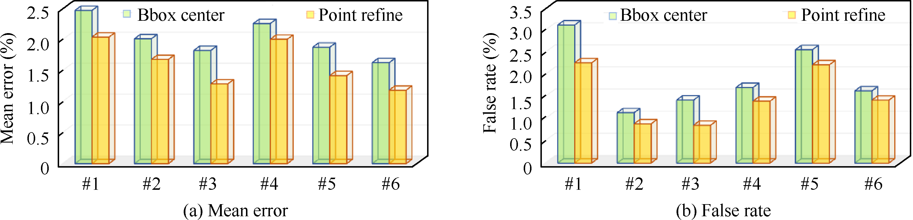

1Machine Intelligence and Collective RObotics (MICRO) Lab, Sun Yat-sen Univeristy, Guangzhou 510275, China
Fig. 1. Schematic diagram of ground stereo system for autonomous landing of the fixed-wing aerial vehicle
Dataset Download
|
Air2Land Dataset Link 1: [Baidu Drive] (Extracting Code: 6tk1) Link 2: [GitHub] |
Detection Method
|
Fig. 2. Structure of detection model based on BboxLocate-Net and PointRefine-Net
Detection Experimental Results
1) BboxLocate-Net model based detection experiments:
Fig. 3. Test results of different CNN algorithms
2) PointRefine-Net model based detection experiments:
|  |
Fig. 4. Comparison of detection results at 6 key points before and after coordinate correction
Fig. 5. Comparison of key point detection results before and after coordinates correction
Localization Experimental Results
1) BboxLocate-Net model based Localization experiments:
Fig. 6. Localization results using different UAV detection algorithms
Fig. 7. Accuracy comparison of spatial positioning results
2) PointRefine-Net model based Localization experiments:
Fig. 8. Comparison of localization results before and after PointRefine-Net
Fig. 9. Comparison of key point detection results before and after PointRefine-Net (PR-N) coordinate correction
Fig. 10. Key point detection results detected by four detection algorithms